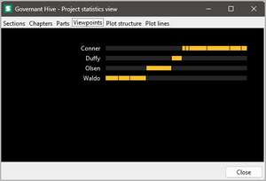

Word count and writing progress
In novelibre, the number of words is used as a metric for the amount of text and the position within the overall text. novelibre counts words following the rules of LibreOffice Writer The word totals displayed in novelibre, however, only include the contents of the sections. Chapter headings and titles are not taken into account. It is therefore quite possible that the number of words shown in Writer may differ from the number of words displayed.
Other quantities such as the number of characters and typewritten pages can be obtained very conveniently in Writer using an exported manuscript. This is also helped by the format of the manuscript exported by novelibre, which corresponds to the standard manuscript page with 30 lines of 60 characters.
The amount of text written is interesting in two respects. On the one hand, you can monitor your writing progress. For this, you can enter the size of the planned book, or a temporary goal. If you activate the logging, you can call up the history with the help of the nv_progress plugin.
Further you get information on the completion status, taking the sections’ status into account. Details can be found in the book properties description.
On the other hand, you have an overview of the balance of the story in terms of chapter length, the distribution of narrative perspectives, or the position of plot points, to name just a few examples. The numbers can be seen in the corresponding columns of the tree view. Those wo like it more comfortable, may want to install the nv_statistics plugin.
